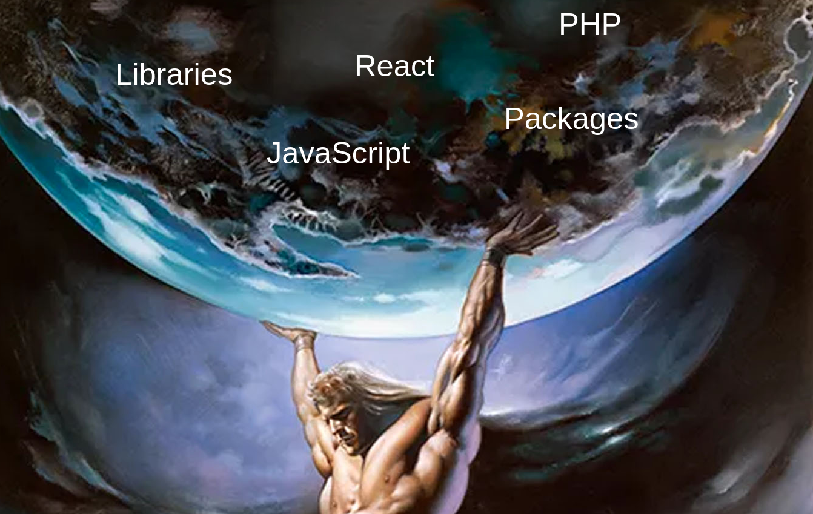
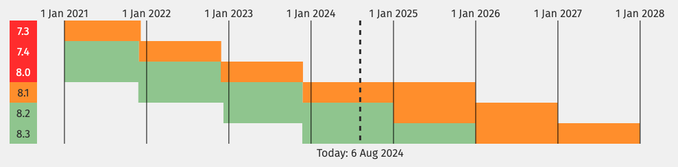
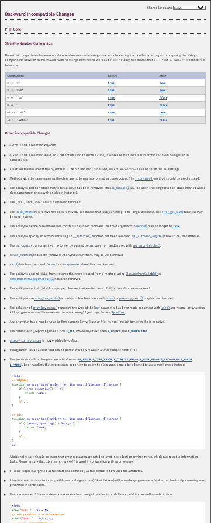
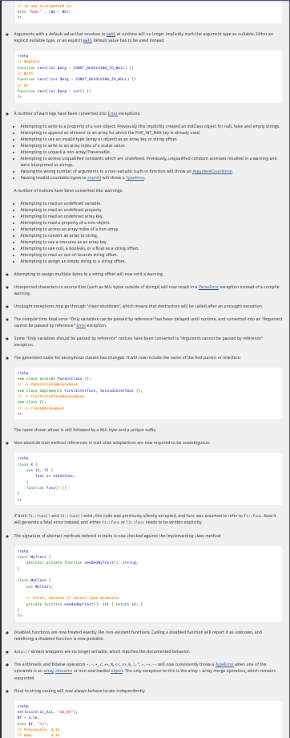
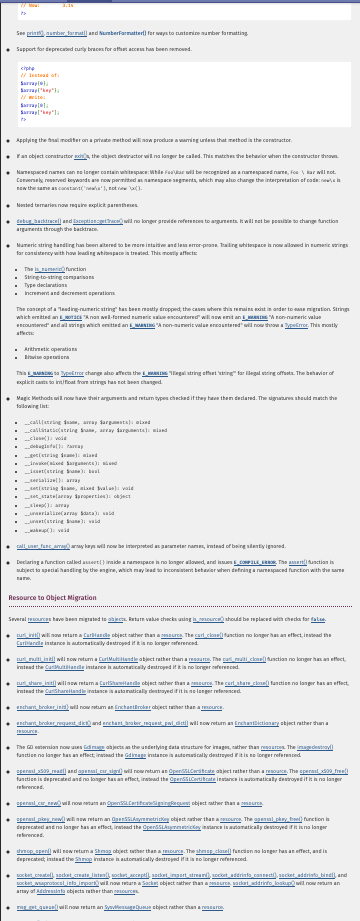
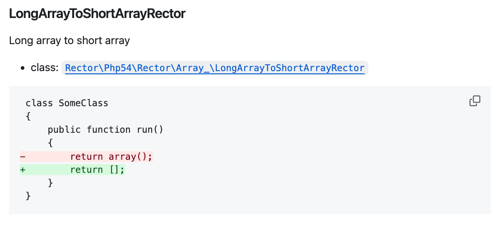

Rector can

How many PHP codebases do we look after again?
Roughly 50...
How long is a PHP verion supported for? 🥺

We could...
Search the code and fix issues we find?



What if there was a tool out there that could do this for us... 👀
return RectorConfig::configure()
->withPaths([__DIR__ . 'src/'])
->withRules([LongArrayToShortArrayRector::class]);
vendor/bin/rector process path --dry-run --debug
Go run it

return RectorConfig::configure()
->withPaths([__DIR__ . 'src/'])
->withSets([LevelSetList::UP_TO_PHP_81]);
return RectorConfig::configure()
->withPaths([__DIR__ . 'src/'])
->withRules([Rule::class, AnotherRule::class])
->withSets([LevelSetList::UP_TO_PHP_81, SetList::CODE_QUALITY]);
return RectorConfig::configure()
->withPaths([__DIR__ . 'src/'])
->withRules([Rule::class, AnotherRule::class])
->withSets([LevelSetList::UP_TO_PHP_81, SetList::CODE_QUALITY])
->withImportNames(removeUnusedImports: true);
return RectorConfig::configure()
->withPaths([__DIR__ . 'src/'])
->withRules([Rule::class, AnotherRule::class])
->withSets([LevelSetList::UP_TO_PHP_81, SetList::CODE_QUALITY])
->withImportNames(removeUnusedImports: true)
->withTypeCoverageLevel(36);
return RectorConfig::configure()
->withPaths([__DIR__ . 'src/'])
->withRules([Rule::class, AnotherRule::class])
->withSets([LevelSetList::UP_TO_PHP_81, SetList::CODE_QUALITY])
->withImportNames(removeUnusedImports: true)
->withTypeCoverageLevel(36)
->withSkip(
[
RuleToSkip::class,
__DIR__ . 'FileToSkip.php',
'*skipFilesLikeThese.php'
]
);